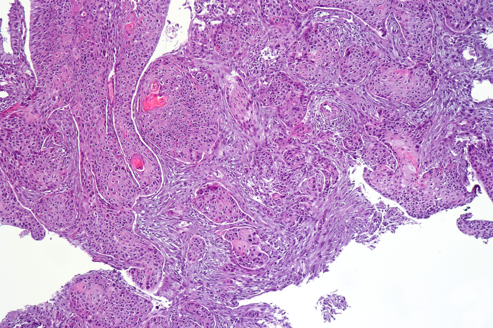
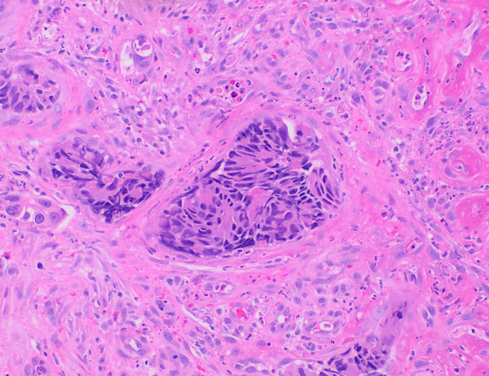
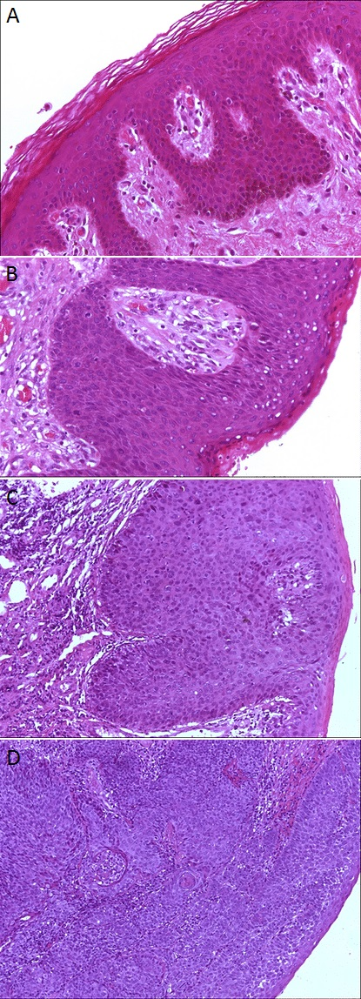

Está colado no reto, então é adenocarcinoma como o resto do intestino.
É exatamente o oposto. O canal anal é o estranho da família — vizinho de parede do reto, sem parentesco de biologia. Ele é escamoso, e essa identidade muda tudo o que vem depois.
Identidade histológica: por que o canal anal não é o resto do tubo
Comece pela ideia que organiza o tema inteiro: o câncer de canal anal é totalmente diferente de todo o restante do tubo digestivo. A proximidade anatômica engana. Ele fica encostado no reto, logo abaixo dele, e mesmo assim não guarda relação biológica nem com o reto nem com o cólon. São vizinhos de parede, não parentes de sangue.
A diferença está na histologia, e ela é o eixo de tudo. No cólon, o subtipo é o adenocarcinoma. No reto baixo, também adenocarcinoma. Esse é o padrão do tubo digestivo: mucosa glandular, tumor glandular. Mas o canal anal quebra o padrão. Ali o epitélio é outro — é pavimentoso, escamoso —, e o tumor que nasce dele é o carcinoma de células pavimentosas, que você vai encontrar nas provas com três nomes para a mesma coisa: escamoso, epidermoide ou pavimentoso. Guarde a equação que resolve metade das questões logo no enunciado: câncer de canal anal = carcinoma escamoso/epidermoide.
E por que insistir tanto nisso logo de cara? Porque a histologia não é um detalhe de classificação — ela é o que comanda o comportamento do tumor. Como o canal anal é de origem escamosa, todo o raciocínio dele segue a lógica dos tumores escamosos, e não a dos adenocarcinomas digestivos. Os fatores de risco serão os de um câncer escamoso. A resposta ao tratamento será a de um tumor escamoso. O comportamento — para onde dissemina, como se trata — segue a família escamosa. É por isso que, daqui para frente, sempre que você pensar em canal anal, vai pensar "como um tumor de pele/escamoso", e não "como um tumor de intestino". A linha pectínea, no meio do canal, é o divisor histológico que separa esses dois mundos: acima dela, epitélio colunar (mundo do adenocarcinoma); abaixo, epitélio escamoso (mundo do canal anal).
Toque num epitélio ou na linha pectínea para ver a leitura histológica.

Achado: ninhos de células escamosas com queratinização focal — a assinatura escamosa que separa este tumor do adenocarcinoma do tubo digestivo. Anal squamous cell carcinoma, H&E. CoRus13, via Wikimedia Commons, CC BY-SA 4.0. Ver fonte.

Achado: glândulas neoplásicas — a arquitetura glandular do resto do tubo digestivo, oposta aos ninhos escamosos do canal anal. Dois tumores, duas biologias. Colorectal adenocarcinoma, H&E. Mikael Häggström, via Wikimedia Commons, CC0 (domínio público). Ver fonte.

Achado: a progressão (normal → displasia → carcinoma) no próprio território onde o epitélio troca de colunar para escamoso — a fronteira histológica do tema. Histopathology of anal epithelium (normal → dysplasia → SCC). Rovelli et al., via Wikimedia Commons, CC BY 4.0. Ver fonte.
Reto baixo
Epitélio colunar, mucosa glandular → adenocarcinoma, como todo o tubo digestivo.
Canal anal
Epitélio escamoso/pavimentoso → carcinoma escamoso/epidermoide. Encosta no reto, mas não se comporta como ele.
Câncer de canal anal = carcinoma escamoso/epidermoide/pavimentoso; apesar de colado no reto, não é adenocarcinoma — e a histologia escamosa comanda risco, estadiamento e tratamento. A linha pectínea é o divisor dos dois mundos.
Quiz — fixação
-
O subtipo histológico predominante do câncer de canal anal é:
Gabarito: B. O canal anal tem epitélio escamoso → carcinoma epidermoide.
Por que cair na A: é o erro de assumir que, por estar perto do reto, segue o padrão glandular do tubo digestivo.
-
Por estar logo abaixo do reto, o canal anal compartilha a mesma biologia do adenocarcinoma de reto baixo.
Falso. Proximidade anatômica não é parentesco biológico — o canal anal é escamoso, não glandular.
Atenção: reto baixo = adenocarcinoma; canal anal = escamoso. Vizinhos de parede, não parentes de sangue.
-
O divisor histológico que separa o epitélio colunar do epitélio escamoso no canal anal é a linha…
Gabarito: A. A linha pectínea marca a passagem do colunar (acima) para o escamoso (abaixo).
Por que cair nas outras: são linhas anatômicas de outros territórios — só a pectínea é o divisor histológico do canal anal.